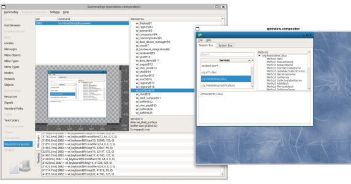

This page describes a few other things that work with Wayland that are
not included in the Wayland or Weston repos.
wlterm by David Herrmann
Native
Wayland terminal emulator based on kmscon by the same author.
Java bindings by Jason Ekstrand's
Git.
Kodi (formerly XBMC)
Wayland integration as Google Summer of Code project (2017)
Previously:
Temporarily dropped as 'unmaintained' (2016)
Initial announcement (2013)
MPV
"Video player based on MPlayer/mplayer2."
git clone git://github.com/mpv-player/mpv.git
./configure --disable-x11 --disable-sdl --enable-wayland --disable-libass
make
sudo make install
glmark2
A GLES2 benchmark.
export CPLUS_INCLUDE_PATH=$WLD/include # I believe needing this is a bug.
bzr branch lp:glmark2
cd glmark2
./waf configure --with-flavors=wayland-glesv2,wayland-gl --prefix=$WLD
./waf
./waf install
$WLD/bin/glmark2-es2-wayland
Debugging tools
Compositor features
Running weston-info will list all global interfaces advertized
by the compositor. It will also tell additional information about the
interfaces it knows about and have something to report, like monitor make
and model, wl_seat capabilities, and wl_shm pixel formats. Weston-info
comes with Weston, and works on any compositor.
OpenGL features
OpenGL (all flavours) features under Wayland can be queried with
wflinfo
provided by Waffle.
Just use -p wayland argument.
Protocol dumpers
When using export WAYLAND_DEBUG=1 (or WAYLAND_DEBUG=client
or WAYLAND_DEBUG=server)
is not enough,
the following tools may help.
- wayland-tracker
A Wayland protocol dumper, MIT licensed, written in Haskell, produces binary,
text, and JSON formatted output. Runs as a middle-man for a single client.
- wayland-tracer
A Wayland protocol dumper, MIT licensed, written in C, produces binary and
human readable output. Can run as a middle-man for a single client, or
act as a middle-man Wayland server.
- wlanalyzer / wldump
A Wayland protocol dumper, MIT licensed, written in C++, produces human
readable output. Runs as a middle-man for a single client.
- wldbg
A Wayland connection processor, MIT licensed, written in C. Runs given functions
on messages passed between server and clients or works in gdb-like mode. Can listen
for new connections to a compositor and take over them.
Runs as a middle-man for single/multiple clients.
Introspection tools
- GammaRay

A software introspection tool for Qt applications, including a module for QtWayland
compositors. Leveraging the libwayland-server introspection API and the QtWayland API
it allows to look at the list of clients currently connected, their resources and relevant
information based on the type of the resource, and the protocol flow between the client(s)
and the compositor.
{kind=link}